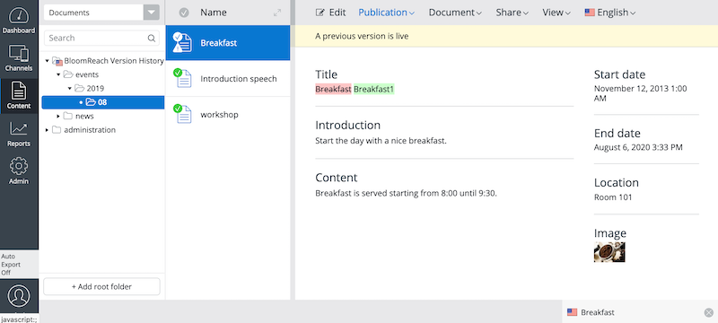
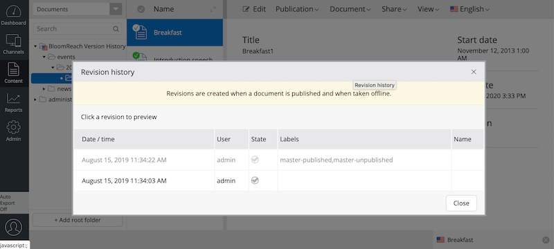
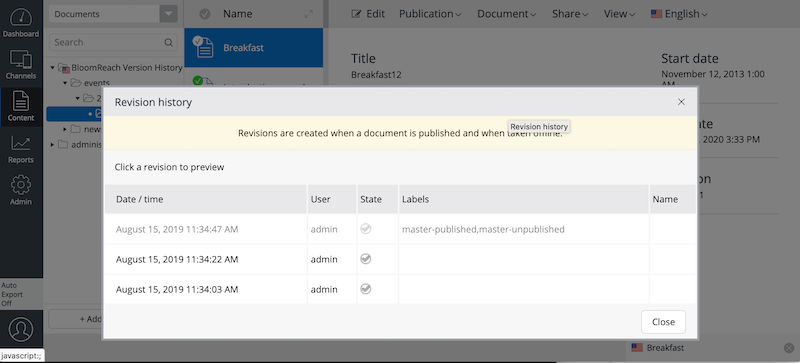
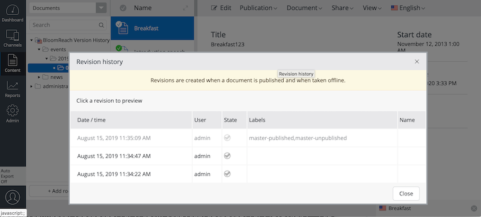
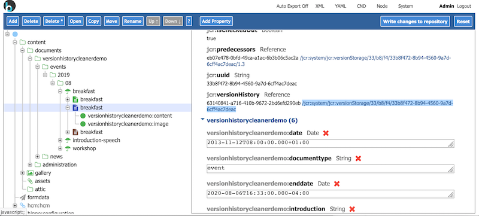
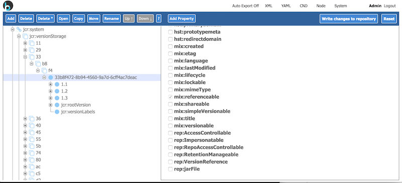
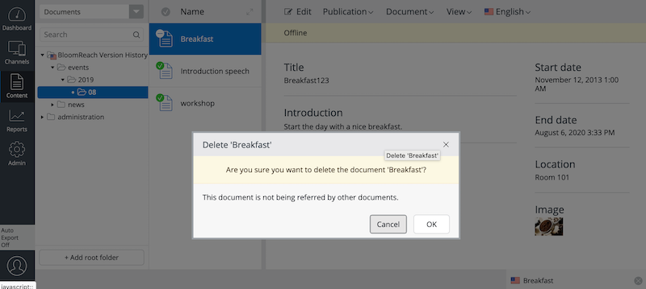
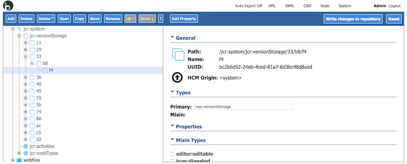

BloomReach Version History Cleaner provides the following features:
Some versions are used to keep internal branching metadata; technically the versions for the branching metadata contains multiple version labels. That kind of versions are excluded in the version history cleanup process.
You can run the demo project like the following:
$ mvn clean install
$ cd demo
$ mvn clean verify && mvn -Pcargo.run
The demo project is configured like the following. So, if you edit and re-publish any documents more than three times, other than Events documents, then you will notice the older versions being removed automatically in order to keep only 3 versions in the version history. But, it will keep only up to 2 versions for Events documents. Also, it will truncate the archived nodes and all the versions when a document is deleted due to the configuration: default.truncate.ondelete: true (false by default).
/hippo:configuration/hippo:modules/version-history-cleaner/hippo:moduleconfig:
default.max.revisions: 3
default.truncate.ondelete: true
versionhistorycleanerdemo:eventsdocument.max.revisions: 2
By default, documents in the demo project do not have any version history initially. When you edit an Events document and publish it, it will create a version in its version history.
After publishing the document, select Document / Show revision history... menu to see its version history.
Ignore the labeled version in gray color as it is used only to keep branching metdata internally. You will see only one version, excluding the labeled version in gray color, as you published it just once.
Edit the document and publish it again, and you will see two versions in its version history.
Edit the document and publish it one more time, and you will still see two versions, with the oldest version being removed automatically, because the configuration in the demo project includes versionhistorycleanerdemo:eventsdocument.max.revisions: 2 to force to keep only 2 versions at max for Events documents.
If you test this sceanrio on other documents such as News documents, then it will result in keeping 3 versions at max due to the configuration: default.max.revisions: 3.
For details on configurations, see the Configuration page.
Find the "preview" variant node, with a blue document icon, of the Events document in CMS Console, and you will see its link to the internal JCR version history of the document.
Click on the link and you will see the internal JCR version history node.
Now, open the document in CMS UI again, take the document offline and delete the document through the Document / Delete... menu.
When the document is deleted, its version history is also removed because the configuration in the demo project enables to truncate the version history on document deletion through the configuration: default.truncate.ondelete: true.
For details on configurations, see the Configuration page.
Please see Release Notes.